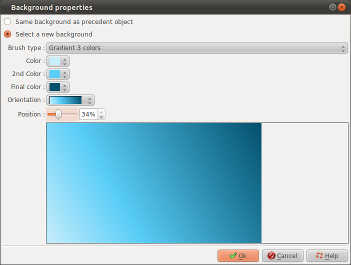

Introduction
The "Background properties" dialog allows you to define settings for
the background of the slide:

This dialog is called by double-clicking the background zone of
a slide, in the timeline.
Description of the dialog
Same background as preceding
object.
If this option is selected, the
slide will have no background definition but will use
the same background as the previous slide:
- If the previous slide does not have a background
definition either, the check continues backwards until a
slide is found which does have a background definition.
- If no previous slide has a background definition, then a
black frame will be used.
Select a new background
If this option is selected, the
slide will have its own background definition.
In that case, the following zones set properties for the
background.
| Solid brush |
Selects a plain color.
|
| Gradient 2 colors |
Selects a gradient of 2
colors |
| Gradient 3 colors |
Selects a gradient of 3
colors |
| Image from library |
Selects a background
image from the library |
Image disk
|
 Selects an image file. You must provide a filename.
Selects an image file. You must provide a filename.
 Displays the
Image framing and
correction dialog to regulate framing and image
corrections. Displays the
Image framing and
correction dialog to regulate framing and image
corrections. |
See also
ffDiaporama 1.0
 Defining the
background
Defining the
background